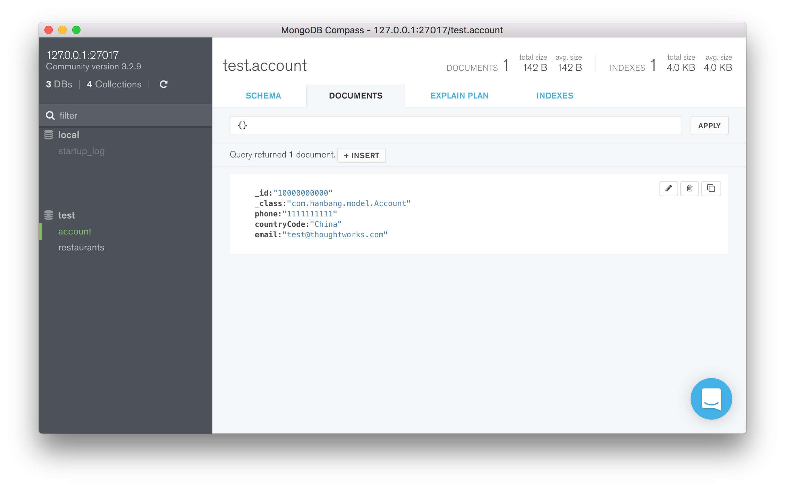

Foreword:
It's not for veteran or magical wizard :) This article is a quick and practical introduction to use Spring Boot and MongoDB to build a server side application .
Recently I had to build a RESTful backend (or server, call it whatever you want, and REST is not the subject of this article) to support a mobile app, using Spring Boot and MongoDB for some reasons. Neither Spring Boot nor MongoDB is my thing, so building a backend with them from scratch is kind of suffering. Since the tutorials out there are either fragmented or obscure, here I will offer a minimum-viable (Spring Boot + MongoDB) backend so as to get rid of the noise which will confuse a newbie.
I always believe that knowing too much useless details at the very beginning of the course to master a new tech is not gonna help but frustrating. On the contrary, ramping your knowledge up step by step based on a practical sample is much easier. The following sample is a good start point for beginners to learn both Spring Boot and Mongo.
Our goal is to create a workable backend that accept HTTP request and change the state of MongoDB, in other word, do a data persistence in database.
No more chatting, take a deep breath and dive.
Overview
Our project structure will eventually looks like this:
demo
├── build.gradle
└── src
└── main
├── java
└── com
└── demo
├── Application.java
├── config
│ └── MongoConfig.java
├── controller
│ ├── AccountController.java
│ └── hateverController.java
├── model
│ ├── Account.java
│ ├── SignUpRequest.java
│
│
├── repository
│ └── AccountRepository.java
└── service
└── AccountService.java
Hand on, you don't have to create each file manually. The magicians of Spring offer you something like this:
It's a boostrap tool for Spring application. You can type you project name in Artifact, type and select MongoDB in the the feild of Dependencies, and select your build tool as Gradle Project on the top. After click Generate Project, you will get a project with the similar structure to our demo application. All you need to do is to flesh out the project skeleton with the upcoming codes.
Gradle Configuration
I am not going into details of every tool we use for the sake of simplicity. And like I said, you don't need to know every details at the beginning.
So edit the file build.gradle in the demo project and make it like this:
build.gradle
group 'com.demo'
version '1.0-SNAPSHOT'
buildscript {
repositories {
mavenCentral()
}
dependencies {
classpath("org.springframework.boot:spring-boot-gradle-plugin:1.4.0.RELEASE")
}
}
apply plugin: 'idea'
apply plugin: 'java'
apply plugin: 'spring-boot'
sourceCompatibility = 1.8
targetCompatibility = 1.8
repositories {
mavenCentral()
}
dependencies {
compile group: 'org.projectlombok', name: 'lombok', version: '1.16.10'
compile group: 'org.springframework.boot', name: 'spring-boot-starter-web', version: '1.4.0.RELEASE'
compile 'org.mongodb:mongodb-driver:3.3.0'
compile 'org.springframework.data:spring-data-mongodb:1.9.4.RELEASE'
testCompile group: 'junit', name: 'junit', version: '4.11'
testCompile group: 'org.springframework.boot', name: 'spring-boot-starter-test', version: '1.4.0.RELEASE'
}
This file is a blueprint to build the application, which specify the version of your application, the version of programming language (we use Java 1.8 here), the IDE support tool(I use idea), the dependencies the application will need, and where to grab these dependencies. Gradle, a build tool and a package manager, will handle all these things if there is a file called build.config in the root directory.
Mongo Configuration
Now it's time to set up the engine of our application, the MongoDB. Spring provides a package, org.springframework.data, to make it easy to use data access technologies. If you take a careful look at the the build.gradle file, you will find out we already integrate the MongoDB module into our project.
To connect to MongoDB, this file is needed:
MongoConfig.java
package com.demo.config;
import com.mongodb.Mongo;
import com.mongodb.MongoClient;
import org.springframework.context.annotation.Configuration;
import org.springframework.data.mongodb.config.AbstractMongoConfiguration;
import org.springframework.data.mongodb.repository.config.EnableMongoRepositories;
@Configuration
@EnableMongoRepositories(basePackages = "com.demo.repository")
public class MongoConfig extends AbstractMongoConfiguration {
//this is where you specify your database's name
@Override
protected String getDatabaseName() {
return "test";
}
@Override
public Mongo mongo() throws Exception {
return new MongoClient("127.0.0.1", 27017);
}
@Override
public String getMappingBasePackage() {
return "com.demo";
}
}
Of course, you can use application.properties to config the database if you want. It's another way to make Spring-associated configuration, which I think it's not so straightforward and flexible as Java-based config.
However, a specification file is not enough to boot up an engine, you still need to install the engine itself, MongoDB, into your system. About the installation, please refer to Install MongoDB. I prefer the manual installation way other than the brew way. If so do you, this guide is clearer, How to install MongoDB on Mac OS X.
After all these boring setups, you can start the database by this command:
$ mongod
That's all you need to connect to MongoDB, but I still want to recommend you the GUI for MongoDB, MongoDB Compass. "The Easiest Way to Explore and Manipulate Your MongoDB Data", like it said.
The Domain Model
I forgot to mention that, we are going to implement a sign up function on the backend. So we need a Account object to hold the registrant's information, like this:
Account.java
package com.demo.model;
import lombok.Data;
import org.springframework.data.annotation.Id;
import org.springframework.data.mongodb.core.mapping.Document;
@Document
@Data
public class Account {
@Id
private String id;
private String username;
private String password;
private String phone;
private CountryCode countryCode;
private String email;
}
With the annotation @Document, the framework will do a mapping between your POJO (Plain Old Java Object) to a MongoDB document. That's saying, when we save one instance of Account, the framework will create a document into the MongoDB, the process is so called data persistence, and that is the moral of all the story here.
But how we save the Java object to MongoDB?
We will need this:
AccountRepository.java
package com.hanbang.repository;
import com.hanbang.model.Account;
import org.springframework.data.mongodb.repository.MongoRepository;
public interface AccountRepository extends MongoRepository<Account, String>{
}
The MongoRepository offered by org.springframework.data contains a lot of common interfaces that will help interact with the database, like save() method we need.
For the sake of best practices, we usually create a service layer to separate the business logics and the interaction related to database. Somebody may has criticism of this, but we do it this way, create a service to save Account object to MongoDB:
AccountService.java
import com.hanbang.model.Account;
import com.hanbang.repository.AccountRepository;
import org.springframework.beans.factory.annotation.Autowired;
import org.springframework.stereotype.Service;
@Service
public class AccountService {
@Autowired
private AccountRepository accountRepository;
public void save(Account account) {
accountRepository.save(account);
}
}
With that, when you call accountService.save(account) somewhere, the method accountRepository.save(account) will actually convert the Java object 'Account' to a document record.
Handle the HTTP request
If you don't need to take a break, let's wrap up all these things now...
A controller in Spring is where the application accept HTTP request from frontend (A mobile app, or a browser) and return the result what frontend asked for.
AccountController.java
package com.demo.controller;
import ...//importing stuff left out here, the IDE will help you, right? By the way, I use IntelliJ...
@Controller
@RequestMapping(value = "/account")
public class AccountController {
private final AccountService accountService;
@Autowired
public AccountController(AccountService accountService) {
this.accountService = accountService;
}
@RequestMapping(method= RequestMethod.POST, value = "/test", headers = "Accept=application/json")
@ResponseBody
public boolean testSave(@RequestBody SignUpRequest userInfo) {
String phone = userInfo.getPhone();
String countryCode = userInfo.getCountryCode();
String email = userInfo.getEmail();
Account account = new Account();
account.setId("10000000000"); //still, for the reason of simplicity...
account.setPhone(phone);
account.setCountryCode(CountryCode.China);
account.setEmail(email);
accountService.save(account);
return true;
}
}
When you send a post request to the location 'http://localhost:8080/account/test' with body like this:
{
"phone": "1111111111",
"countryCode": "86",
"email": "test@thoughtworks.com"
}
The controller will convert the JSON to an Java object, and then save it into MongoDB.
If you want Spring do the conversion automatically, the process as know as the deserialization, simply create a model to hold the JSON-like object:
SingUpRequest.java
package com.demo.model;
import com.fasterxml.jackson.databind.annotation.JsonDeserialize;
import lombok.Data;
import lombok.NoArgsConstructor
@Data
@NoArgsConstructor
@JsonDeserialize
public class SignUpRequest {
private String phone;
private String countryCode;
private String email;
}
A Java object with the annotation @JsonDeserialize can be deserialized from JSON or serialized as JSON, which will handled by Spring without your intervention.
Last but least, do not forget the main entry of our application:
Application.java
package com.hanbang;
import org.springframework.boot.SpringApplication;
import org.springframework.boot.autoconfigure.EnableAutoConfiguration;
import org.springframework.boot.autoconfigure.SpringBootApplication;
import org.springframework.context.annotation.ComponentScan;
@SpringBootApplication
@ComponentScan("com.hanbang")
@EnableAutoConfiguration
public class Application {
public static void main(String[] args){
SpringApplication.run(Application.class, args);
}
}
Finally, to start the application, just run this command in terminal:
gradle bootRun
Manual Test
Send a post request with Postman:
Remember to add the header to request:
'Content-Type: application/x-www-form-urlencoded'
Then you will see a document in MongoDB Compass:

Hope that helps.